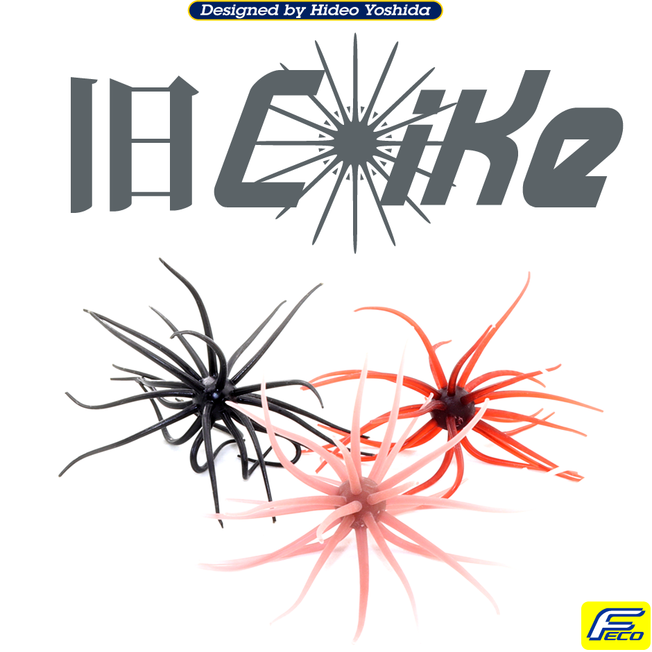
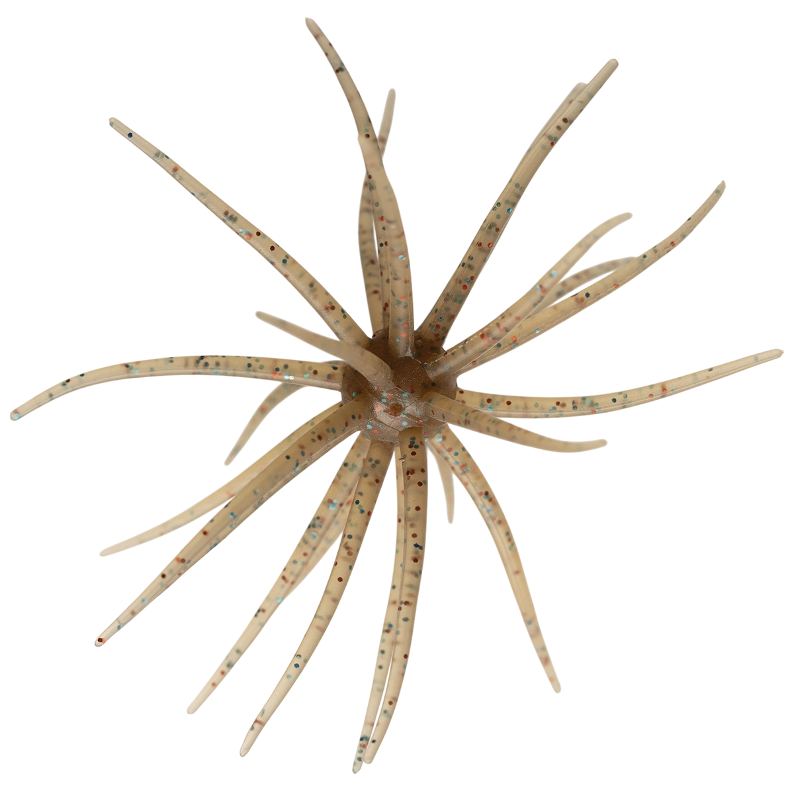
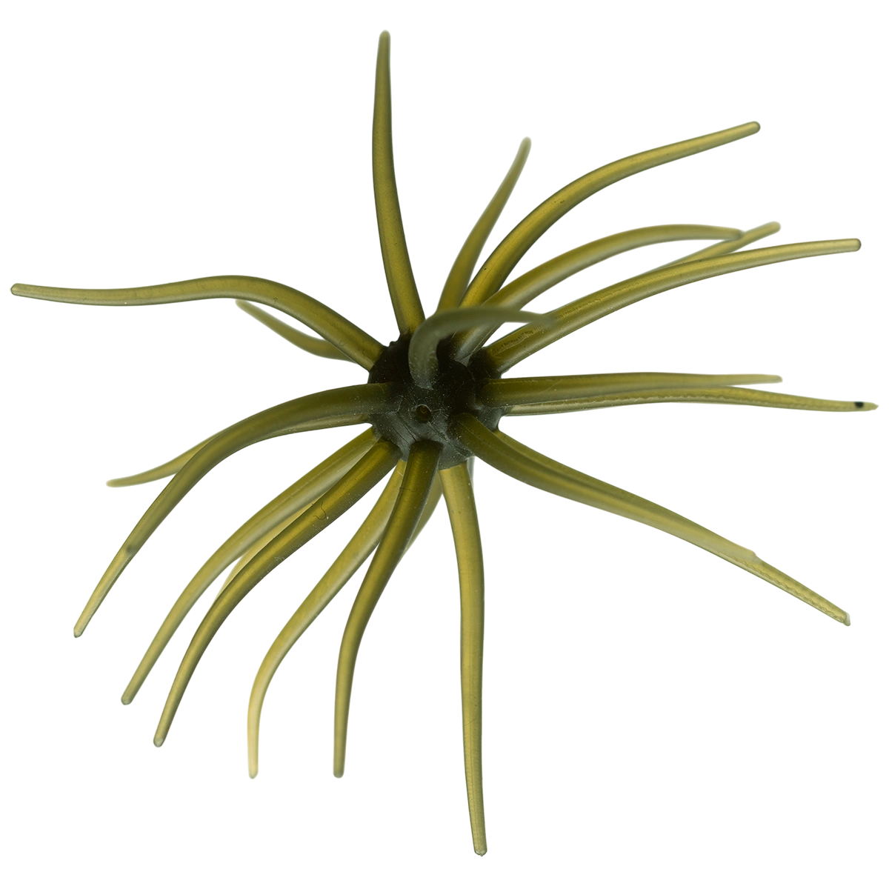
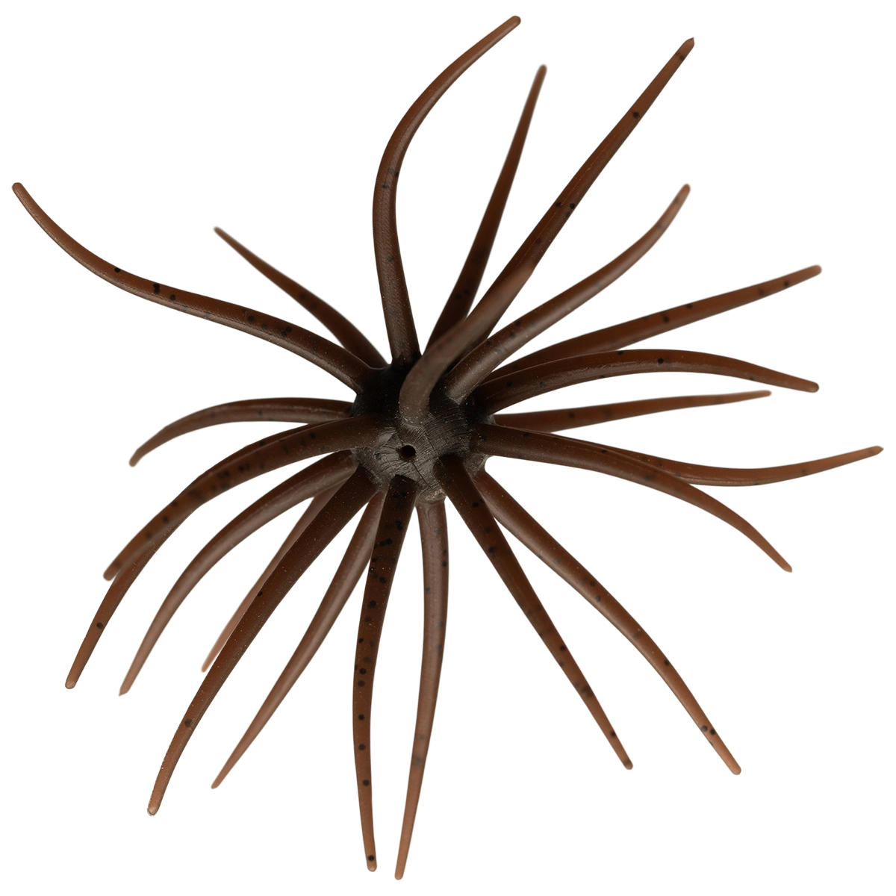
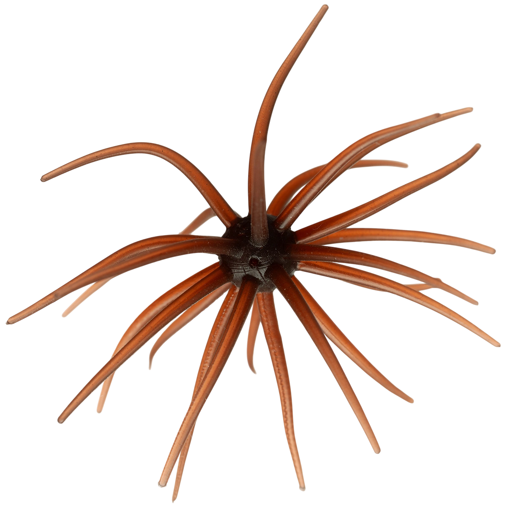

旧コイケ
（Kyu Coike）
旧コイケは、ハイドアップのバス用ワームです。設計は吉田秀雄さん。キャッチコピーは「無限のバイトを生み出す毛玉の生命体」です。
小さな玉からたくさんの毛が生えた形で、ジグヘッドに付けるだけでラバージグのようになり、毛のアクションで誘って玉で食わせるのが最大の特徴。タフな状況でもバイトが続きます。

画像出典:ハイドアップ公式HP
スペック
- メーカー
- HIDEUP（ハイドアップ）
- 設計
- 吉田秀雄
- タイプ
- ワーム
- 入り数
- 3個
- カラー
- 全10色（2025モデル）
- おすすめのリグ
- ダウンショット・ノーシンカー・キャロライナ・スプリットショット・ジグヘッド
- ターゲット
- バス
- 価格
- 1,320円（税込）
▼今すぐチェック
旧コイケの特徴
毛のアクションで誘い、玉で食わせる
-
ジグヘッドだけでラバージグになる
ジグヘッドにセットするだけで、ラバージグのようなシルエットになる。これが旧コイケの基本のリグ。
-
毛が誘い、玉が食わせる
放射状に生えた毛が水の中でゆらゆら動いてバスを寄せ、中心の玉を狙わせて食わせる。
-
リグにルールがない
ジグヘッドのほか、ダウンショット・ノーシンカー・キャロライナ・スプリットショット、ワッキーなどにも使える。
旧コイケの使い方
基本は、ジグヘッドに付けて、ボトムを小さく跳ねさせたりシェイクしたりして毛を動かす使い方です。オープンウォーターでは、ダウンショットやスプリットショットでボトムの少し上を漂わせるのも効果的です。
タックルは、オープンを攻めるならライトアクションのスピニングロッド＋フロロ2〜5lb、カバーを攻めるパワーフィネスならミディアムアクションのスピニングロッド＋PEラインがおすすめです。
※ほかのワームと一緒に保管すると溶けることがあるので、別のケースに分けておきましょう。
旧コイケの得意な状況
プレッシャーが高く、普通のワームやジグに反応しないタフな状況で出番です。
小さなシルエットでも、たくさんの毛が動き続けてアピールし、玉に口を使わせられるのが強み。食い渋ったバスでもよく釣れるワームです。
ワンポイント
毛は少し動かすだけでよく揺れるので、シェイクしたら止める間を長めに取り、毛がゆっくり戻る動きで食わせるのがコツ。動かしすぎず、その場で長く見せるほうがバイトが出やすくなります。
人気カラー
旧コイケの人気カラーを紹介します。

モエビエビを食べているバスに。ナチュラルな定番。

ウォーターメロンクリアな水で自然に見せたい時に。

グリーンパンプキンどのフィールドでも使いやすいベーシックカラー。

スカッパノン少し濁りがある時や、ボトムで目立たせたい時に。
※2025モデルは全10色。ほかにモーターオイルGF・ウォーターメロンシード・グリパンブルーF・たまらんばいダークシュリンプ・クリアーブラウン・クリアーワカサギがあります。
画像出典:ハイドアップ公式HP
▼今すぐチェック
旧コイケに似ているルアー
-
 オクトパス
フィッシュマグネット
詳細はこちら＞
オクトパス
フィッシュマグネット
詳細はこちら＞
8本のアームを球体でまとめたワーム。ボリュームで寄せたい時に。
-
 オクトパスミニ
フィッシュマグネット
詳細はこちら＞
オクトパスミニ
フィッシュマグネット
詳細はこちら＞
オクトパスの95mm版。球体を食わせる考え方が近い。
-
 ヘアリースパイダー クジャラ
イマカツ
詳細はこちら＞
ヘアリースパイダー クジャラ
イマカツ
詳細はこちら＞
たくさんの脚が動き続けるエラストマーワーム。